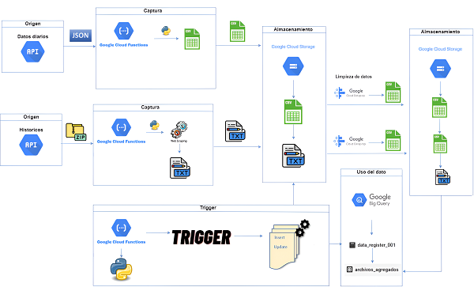
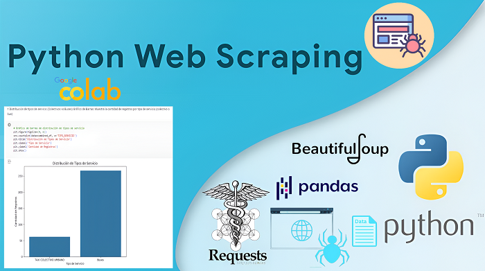
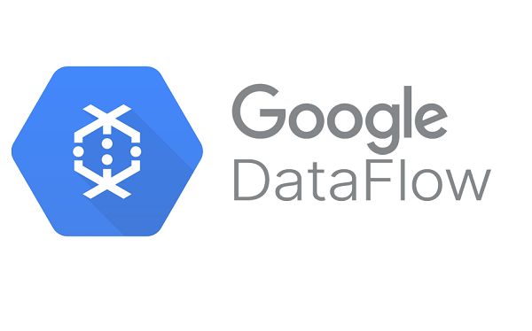
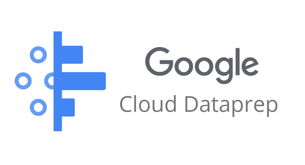

Portafolio personal
Estoy cursando mi último año en Duoc UC. Poseo conocimientos en: Google cloud platform, procesos ETL, bases de datos SQL y python avanzado. Tengo diversos proyectos académicos que podre mostrar en este sitio personal. Estoy buscando oportunidades para crecer profesionalmente en esta hermosa carrera.
Proyectos completos

Descripción del Proyecto Gcp
Captura de datos con cloud fuctions, almacenamiento Cloud storage bucket y Big Query

Web scraping con python y análisis Google Colab
Captura de datos con web escraping y su posterior análisis en Google Colab

Procesamiento de datos en real time con Data flow
Captura de datos de Api de clima y Procesamiento de datos con Data flow
Tutoriales youtube

Liempieza de datos con Data prep